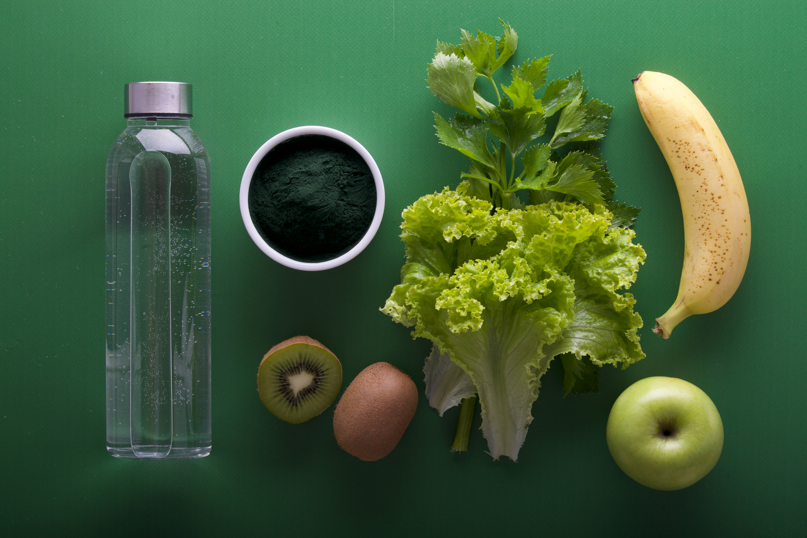
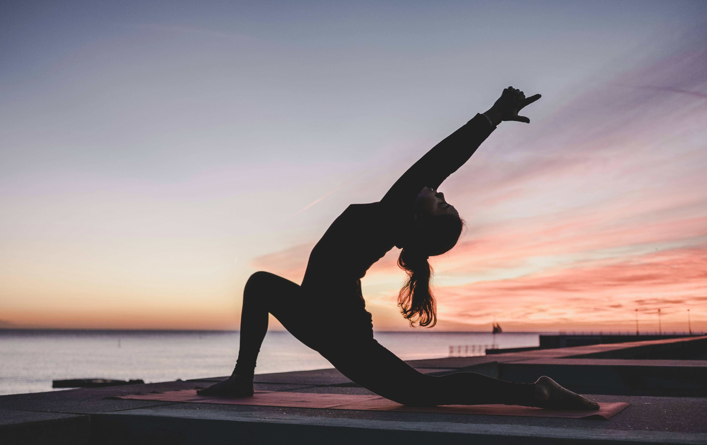
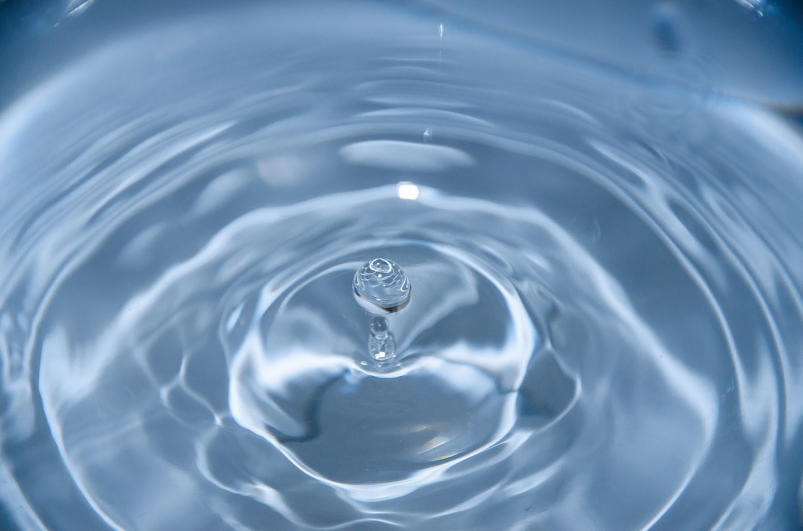

← Volver al Catálogo
En Consultorio Naturista Edén creemos que la salud no se limita a tratar síntomas, sino a mantener el equilibrio natural entre el cuerpo, la mente y el espíritu. Guiados por la naturaleza, compartimos los 8 Remedios Naturales fundamentales para renovar tu bienestar.
🍎 1. Nutrición Natural
"Alimentación natural es aquella que es accesible y no es cara, valoriza la variedad, es armoniosa en cantidad y calidad, naturalmente colorida y segura sanitariamente."
Beneficios:
La alimentación completa y variada ayuda a evitar enfermedades como la diabetes, hipertensión, accidentes vasculares cerebrales, enfermedades cardíacas y algunos tipos de cáncer.
Recomendaciones:
- Hacer de alimentos In Natura o mínimamente procesados la base de la alimentación, limitando el uso de alimentos procesados (conservas, compotas, panes y quesos).
- Evitar el consumo de alimentos ultraprocesados (galletas rellenas, gaseosas, fideos instantáneos, etc.).
- Utilizar aceites, grasas, sal y azúcar en pequeñas cantidades.
- Comer con regularidad y atención, en ambientes apropiados y siempre que sea posible en compañía de familiares y/o amigos, evitando cadenas de comida rápida.
- Ser crítico en cuanto a la información, orientaciones y mensajes sobre alimentación difundidas en propagandas.
Importante:
"Nuestro cuerpo se forma con el alimento que ingerimos."
"Deje que la alimentación sea su remedio y el remedio, su alimentación" (Hipócrates).
¡USTED ES LO QUE COME!

🏃♂️ 2. Ejercicio Físico
Beneficios:
- Reducción de hipertensión, diabetes y obesidad.
- Mejora la flexibilidad corporal, reduciendo el riesgo de caídas.
- Disminución del riesgo de muerte prematura por enfermedades cardiovasculares.
- Mejora la condición muscular y cardiorrespiratoria.
- Aumenta la salud ósea y funcional.
- Reduce el riesgo de ACV, depresión, cáncer de colon y de mamas.
- Reduce y alivia la ansiedad.
- Reduce el colesterol.
- Mejora la calidad del sueño.
Recomendación:
30 minutos de actividad moderada, cinco veces en la semana o más (con un total de 150 minutos).
Importante:
"El cerebro está morbosamente excitado al tener que trabajar constantemente, mientras el sistema muscular se debilita por falta de ejercicio. [...] Tanto como sea posible, debería conservarse la armonía entre las facultades mentales y las físicas. Esto es necesario para conservar con buena salud todo el organismo."

💧 3. Agua Viva
Beneficios:
La ingestión de agua está asociada con el bienestar general y la salud física y mental.
"El buen funcionamiento intestinal depende de la ingestión de agua."
Recomendaciones:
La cantidad de agua ingerida diariamente debería ser en promedio de 35 a 40 ml por kg de peso.
Uso del agua como recurso terapéutico externo:
Ducha alternada caliente y fría
- Estimula la circulación
- Fortalece el sistema inmunológico
- Facilita la cura de heridas e infecciones
- Es vigorizante
Escalda de Pies
- Alivia el dolor de cabeza
- Relaja
- Provoca transpiración
- Combate resfríos
- Alivia dolores menstruales
Vaporización
- Descongestiona la nariz
- Alivia el dolor de garganta
- Entibia y mejora las vías respiratorias
Compresa fría
- En el cuello para el dolor de garganta y laringitis.
- En traumas, aplicación de hielo en la parte afectada durante las primeras 24 h.
Importante:
"El agua es el mejor líquido posible para limpiar los tejidos."

☀️ 4. Luz Solar
Beneficios:
- La luz solar promueve la síntesis y aprovechamiento de la vitamina D.
- La vitamina D ayuda en las funciones biológicas cerebrales y cognitivas.
- La luz solar mejora el humor y combate la depresión.
- La luz solar promueve la autorregulación corporal y tiene influencia en la producción de hormonas.
Recomendaciones:
- Siempre que sea posible, exponerse al sol por lo menos de 15 a 20 min. por día.
- Utilizar anteojos oscuros, sombrero y ropa liviana en una exposición prolongada.
- Aplicar protector solar 20 min. antes de la exposición prolongada al sol y volver a aplicar cada dos horas. La ausencia de filtro solar en exposiciones prolongadas causa fotoenvejecimiento y cáncer.
Importante:
"El aire puro, la alegre luz del sol, las flores y los árboles, los huertos y los viñedos, el ejercicio al aire libre, en medio de estas bellezas, favorecen la salud y la vida."
⚖️ 5. Temperancia y Equilibrio
Beneficios:
- Evita el exceso de peso y la obesidad: Promueve un estilo de vida consciente frente al consumo de alimentos.
- Evita enfermedades respiratorias relacionadas al tabaquismo: Previene episodios de asma, enfermedades respiratorias agudas, tos y problemas en vías respiratorias provocados por el humo de tabaco.
- Evita muertes prematuras: Previene el impacto del alcoholismo y el tabaquismo, reduciendo factores de riesgo para enfermedades crónicas y ciertos tipos de cáncer.
Recomendación:
"Temperancia es evitar completamente lo que es perjudicial y usar con sabiduría lo que es saludable y nutritivo."
Importante:
"Nuestro peligro no viene de la escasez, sino de la abundancia. Constantemente estamos tentados a excedernos."
"Algunos enferman por exceso de trabajo. Para tales, el descanso, la tranquilidad y una dieta sobria son esenciales para la restauración de la salud."
🍃 6. Aire Puro
Beneficios:
"La influencia del aire puro y fresco permite que la sangre circule saludablemente a través del sistema. Además refresca el cuerpo y promueve la buena salud. Su influencia abarca la mente y le imparte cierto grado de compostura y serenidad."
"La buena respiración calma los nervios, estimula el apetito, hace más perfecta la digestión, y produce sueño sano y reparador."
Recomendación:
Evitar lugares donde la contaminación del aire es alta.
- La contaminación del aire aumenta el riesgo de alteraciones genéticas, incrementando el riesgo de diabetes tipo 2 y asma.
- La mala calidad del aire causa efectos negativos a la salud humana: dolor de cabeza, irritación en los ojos, bronquitis, gripe, neumonía y conjuntivitis. A largo plazo puede causar problemas inmunológicos, del sistema nervioso y defectos congénitos.
Importante:
"Los ambientes ventilados con abundancia de aire natural promueven el bienestar y la salud."
🌙 7. Descanso Reparador
Beneficios:
El sueño regular está significativamente relacionado con el desempeño cognitivo, la productividad, la salud física y emocional, disminuyendo estados depresivos, ideas suicidas, accidentes de tránsito y accidentes de trabajo.
Recomendaciones:
- Reservar de 7 a 8 horas diarias para dormir.
- Consultar especialistas para identificar las causas de insomnio. Entre los disturbios del sueño se destaca la apnea obstructiva del sueño, que interrumpe las fases profundas de sueño, provocando fatiga, riesgos de obesidad, hipertensión y eventos cardiovasculares.
- Promover las condiciones necesarias para dormir bien. La privación del sueño es uno de los factores potenciales para el síndrome metabólico que está asociado con ataques cardíacos, derrames cerebrales y diabetes. La ausencia de sueño por una noche altera el esquema alimentario, causa agitación, falta de apetito y estrés.
Importante:
- Una mejor salud mental y física por medio de variados consejos de bienestar, apoyo social, dieta y ejercicio, están asociadas al descanso semanal.
- "Dios vio que el día de reposo era esencial para el hombre [...] Al darle el descanso al hombre, Dios consideró su salud espiritual y su salud física."
"En paz me acostaré, y asimismo dormiré; porque solo tú, Jehová, me haces vivir confiado". Salmos 4:8.
🌱 8. Confianza en Dios
Beneficios:
- Mejor salud física, mental y comportamental.
- Mejor calidad de vida relacionada a la salud.
- Menores niveles de ansiedad y depresión.
- Mejor forma de enfrentar situaciones difíciles, lutos y relaciones interpersonales.
- Mayor longevidad con calidad de vida.
- Mejor estilo de vida.
Recomendaciones:
"La conexión con Dios lo es todo. Cristo logra en su sentido más pleno lo que el médico sólo intenta hacer... El médico trabaja con celo para prolongar la vida. Cristo es el dador de la vida".
Importante:
"Venid a mí todos los que estáis trabajados y cargados, y yo os haré descansar" (Mateo 11:28). Esta es una receta para la curación de todos los males mentales, físicos y espirituales.
"El corazón alegre constituye buen remedio; mas el espíritu triste seca los huesos" (Proverbios 17:22).
"Un corazón alegre constituye el mejor remedio."
— Consultorio Naturista Edén